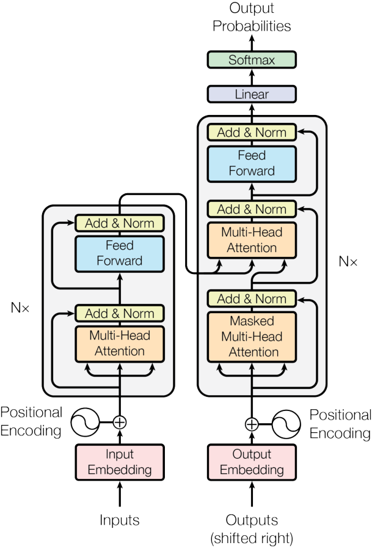
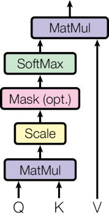
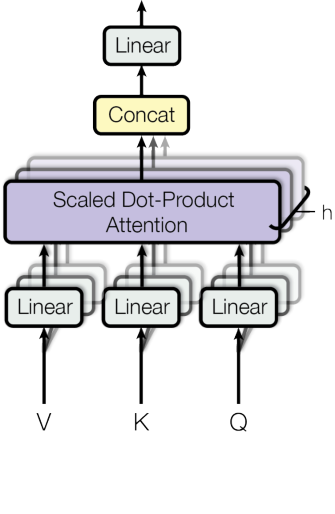

基于注意力机制的全新序列转导模型架构 —— Transformer
Ashish Vaswani, Noam Shazeer, Niki Parmar, Jakob Uszkoreit, Llion Jones, Aidan N. Gomez, Lukasz Kaiser, Illia Polosukhin
Google Brain, Google Research, University of Toronto
当前主流的序列转导模型基于复杂的循环或卷积神经网络，包含编码器与解码器，并通过注意力机制连接二者。
本文提出一种全新的简单网络架构 —— Transformer，它完全基于注意力机制，彻底摒弃了循环与卷积。
在两个机器翻译任务上的实验表明：Transformer 模型在质量上更优、并行度更高、训练时间显著更短。在 WMT 2014 英德翻译任务上取得 28.4 BLEU，英德翻译取得 41.8 BLEU，且训练成本远低于已有最优模型。

Figure 1: The Transformer —— 模型架构图（Encoder 左半部，Decoder 右半部）
N = 6 层堆叠，每层含 Multi-Head Self-Attention + Position-wise FFN，残差连接与层归一化
N = 6 层堆叠，额外增加 Encoder-Decoder Attention，Masked Self-Attention 防止看到未来信息

Figure 2 (left): Scaled Dot-Product Attention
其中 headi = Attention(QWiQ, KWiK, VWiV)

Figure 2 (right): Multi-Head Attention
Query 来自 Decoder 上一层，Key/Value 来自 Encoder 输出。Decoder 每个位置可关注输入序列的所有位置，模拟经典 Seq2Seq 注意力。
Query、Key、Value 均来自 Encoder 上一层同一位置。Encoder 每个位置可 attending 到前一层的所有位置，实现全局上下文编码。
Decoder 每个位置只能 attending 到该位置及之前的所有位置。通过将非法连接置为 -inf 的 Mask 实现，保持自回归特性。
每层含两个线性变换与 ReLU 激活，dmodel = 512，内层维度 dff = 2048。对不同位置使用相同参数，层间参数不同。
输入/输出 token 均通过可学习嵌入映射到 dmodel 维。解码器输出经线性变换 + softmax 预测下一 token。嵌入层与 pre-softmax 线性层共享权重，并乘以 sqrt(dmodel)。
| Layer Type | Complexity per Layer | Sequential Operations | Maximum Path Length |
|---|---|---|---|
| Self-Attention | O(n2 d) | O(1) | O(1) |
| Recurrent | O(n d2) | O(n) | O(n) |
| Convolutional | O(k n d2) | O(1) | O(logk(n)) |
| Self-Attention (restricted) | O(r n d) | O(1) | O(n / r) |
Table 1: 复杂度、顺序操作数与最大路径长度对比（n=序列长度, d=表示维度, k=卷积核大小, r=邻域大小）
Adam (beta1=0.9, beta2=0.98, eps=1e-9)，学习率随步数变化：
warmup_steps = 4000
| Model | EN-DE BLEU | EN-FR BLEU | EN-DE FLOPs | EN-FR FLOPs |
|---|---|---|---|---|
| ByteNet | 23.75 | 1.0e20 | ||
| GNMT + RL | 24.6 | 39.92 | 2.3e19 | 1.4e20 |
| ConvS2S | 25.16 | 40.46 | 9.6e18 | 1.5e20 |
| GNMT + RL Ensemble | 26.30 | 41.16 | 1.8e20 | 1.1e21 |
| ConvS2S Ensemble | 26.36 | 41.29 | 7.7e19 | 1.2e21 |
| Transformer (base) | 27.3 | 38.1 | 3.3e18 | |
| Transformer (big) | 28.4 | 41.8 | 2.3e19 |
Table 2: Transformer 在 WMT 2014 newstest2014 上的 BLEU 与训练成本对比
| Variant | N | dmodel | dff | h | dk | Pdrop | BLEU (dev) |
|---|---|---|---|---|---|---|---|
| base | 6 | 512 | 2048 | 8 | 64 | 0.1 | 25.8 |
| (A) single head | 1 | 512 | 24.9 | ||||
| (A) 16 heads | 16 | 32 | 25.4 | ||||
| (B) dk=32 | 32 | 25.1 | |||||
| (C) big model | 1024 | 4096 | 16 | 64 | 0.3 | 26.4 | |
| (D) dropout=0.0 | 0.0 | 24.6 | |||||
| (E) learned PE | 25.7 |
Table 3: Transformer 架构变体在 newstest2013 开发集上的表现
Attention Is All You Need